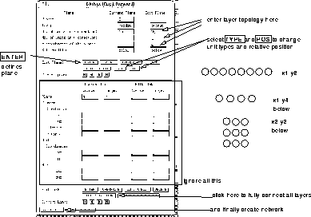
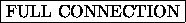
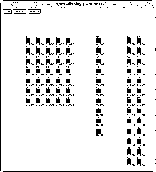
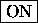

You will need to create your own networks. SNNS allows the creation of many different network types. Here is an example of how to create a conventional (fully connected) feed-forward network.
First select the FEEDFORWARD option, hidden under the
button in the manager panel. You are then faced with the panel in
figure  . Only two parts of the panel are required.
. Only two parts of the panel are required.
The top allows the definition of the network topology, that is how many units are required in each layer and how they should appear if the network is displayed on the screen. The lower part allows you to fully connect the layers and to create the network.
Note that much of what you are defining here is purely cosmetic. The pattern files contain a given number of inputs and outputs, they have to match the network topology; how they are arranged in the display is immaterial.

First you have to define the input layer by filling the blanks in the top right hand corner (edit plane) of the panel. The panel shows the current settings for each group of units (a plane in SNNS terminology). Each group is of a given type (i.e. input, hidden or output), and each plane contains a number of units arranged in an x-y-z coordinate system. This is used for drawing networks only!
You can change the entries by entering values into the boxes or by clicking on and to change the unit type and relative position. The relative position is not used for the first plane of units (there is nothing to position it relatively to). The layers will, for instance, be positioned below the previous layers if the 'Rel. Position' has been changed to 'below' by clicking on the button.
Here is an example of how to create a simple pattern associator network with a 5x7 matrix of inputs inputs, 10 hidden units and 26 outputs:
Leave 'Type' as input
set no 'x' direction to 5
set no 'y' direction to 7
and click on \fbox{ENTER}
If the input is acceptable it will be copied to the column to the
left. The next step is to define the hidden layer, containing 10
units, positioned to the right the inputs.
Change 'Type' from input to hidden by clicking on \fbox{TYPE} once.
set no 'x' direction to 1
set no 'y' direction to 10
change 'Rel.Position' to 'below' by clicking on \fbox{POS}
and click on \fbox{ENTER}
You are now ready to define the output plane, here you want 26 output
units to the right of the input. You may want to save space and
arrange the 26 outputs as two columns of 13 units each.
Change 'Type' from hidden to output by clicking on \fbox{TYPE} again.
set no 'x' direction to 2
set no 'y' direction to 13
and click on \fbox{ENTER}
After defining the layer topology the connections have to be made.
Simply click on 
(bottom left of lower panel). Then select and . You may have to confirm the destruction of any network already present.
Selection of from the SNNS-manager panel should result in
figure  .
.

The lines showing the weights are not normally visible, you have to switch them on by select , and then click on the

button next to 'links' option. You will find that SNNS refuses any further input until you have selected .
.
After creating the network and loading in the pattern file(s) - which have to fit the network topology - you can start training the net. The network you have just created should fit the 'letters' patterns in the SNNS examples directory.
An alternate way to construct a network is via the graphical network
editor build into SNNS. It is best suited to alter an existing large
network or to create a new small one. For the creation of large
networks use bignet. The network editor is described in
chapter  .
.